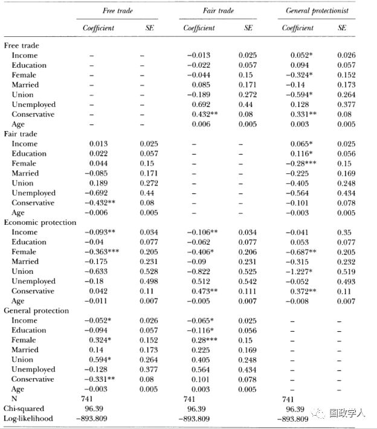
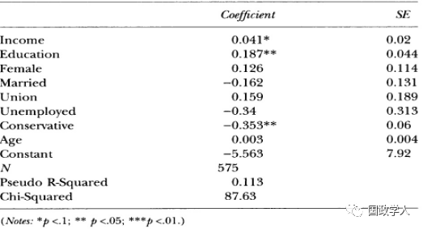

收录于合集

简 介
** 【作者】** Sean D. Ehrlich是佛罗里达州立大学政治学系副教授，博士毕业于密歇根大学安娜堡分校，他的研究兴趣包括国际和比较政治经济学、民主制度、贸易政策、全球化等。他于2011年在牛津大学出版社出版的著作 Access Points: An Institutional Theory of Policy Bias and Policy Complexity __ 获美国政治科学协会（APSA）2012年度的 Gladys M. Kammerer Award，该奖旨在奖励美国国家政策领域中的最佳政治学著作。
** **【 编译 】****施榕
** **【 校对 】****陈成龙
** **【 审校 】****许文婷
** **【 来源 】****Ehrlich, Sean D. “The fair trade challenge to embedded liberalism.” International Studies Quarterly 54.4 (2010): 1013-1033.
** 【期刊】** 国际研究季刊（International Studies Quarterly）是以季报学术期刊为主的官方杂志。它成立于1959年，由 Wiley-Blackwell代表协会出版。总编辑乔治城大学的Daniel Nexon。根据 Journal Citation Reports的数据显示，该期刊的2017年影响因子为2.148。
公平贸易运动对内嵌自由主义的挑战
The Fair Trade Challenge to Embedded Liberalism
内容提要
美国国内一部分公众对公平贸易的支持并不是其贸易保护主义诉求的伪装，这部分人的偏好纯粹是出于对环境和劳工标准的担忧而不是自身的经济利益。这可能对内嵌自由主义理论(embedded liberalism)形成挑战，因为该理论让政策制定者通过补偿经济利益受损的人群来争取对自由贸易的支持的建议可能难以奏效。
文章导读
**1
**
简介 ****
作者在文章开头首先回顾了以往的文献以及本文的由来。他认为，在研究民意和贸易政策之间的关系时，过去大部分研究都集中于考察贸易对个人的经济影响是否是塑造公众的贸易政策偏好的决定性因素。最近的一部分学者开始根据鲁杰提出的内嵌自由主义来考察决策者如何通过对利益受损者实行补偿性政策来塑造民意并寻求对自由贸易的支持。然而，作者指出，既有的研究存在几个不足。首先，这些研究都受新自由主义经济理论的影响（比如 Stolper-Samuelson定理和 Ricardo- Viner模型），从单一的维度来考察公众对贸易政策的偏好，认为他们的偏好只有2种，要么是支持自由贸易，要么就是反对它（即支持贸易保护主义），而且将实行贸易保护的原因统一归结于保护国内就业的需要。作者认为，这夸大了民众对自由贸易的支持，因为即使某人反对限制贸易以保护国家经济，他也可能反对自由贸易。其次，反对自由贸易常常被等同于支持贸易保护主义，这种对贸易政策偏好的分析过于简单，无法让人理解为什么民族主义和性别等非经济因素也会对贸易政策的偏好产生重大影响。因为除了个人就业和维护国家经济的考量以外，个人还可以出于别的原因而反对自由贸易。最后是这种单一维度的偏好对内嵌自由主义研究的启示。在经过20世纪30年代的大萧条和第二次世界大战之后，西方国家认为自由贸易需要与之相匹配的国内政策来弥补国内劳动力由于经济开放而面临的风险。鲁杰将其称之为“内嵌自由主义“（embedded liberalism），即关于自由贸易的经典自由主义被内嵌于旨在减少自由贸易所带来的消极影响的政策中。
“内嵌自由主义”最核心的要素就是政策制定者如何通过补偿性政策以减少贸易对就业的消极影响来动员民众支持自由贸易，包括失业保险、就业培训等一系列社会福利政策。因此，“内嵌自由主义”通常被用来解释为何自二战以来政府的规模迅速扩大，它认为公众反对自由贸易是出于贸易对就业和收入的消极影响。然而，如果公众反对自由贸易是受其他因素的影响，那么“内嵌自由主义”所提倡的传统调控政策可能会失效。这也是当时美国国内兴起的公平贸易运动所带来的政策讨论。在公平贸易运动中，一部分人担心贸易对环境和劳工条件的影响而反对自由贸易。这暗示着公众的贸易政策偏好可能是多维度的：一个非贸易保护主义者也可以反对自由贸易；一个反对贸易保护的人也不一定支持消除自由贸易的障碍。但是，许多经济学的分析认为，支持公平贸易的人实际上就是贸易保护主义者，只不过贸易保护主义是一个名声不太好的词，所以他们就采用另一种说法以掩饰他们真正的政策偏好。 作者这篇文章的论点就在于，有相当一部分主张公平贸易的人是真正出于对环境和劳工条件的担忧而反对自由贸易，这部分人与贸易保护主义者有本质的不同 。因此，过去的研究都夸大了公众对自由贸易的支持而且对人们支持贸易保护主义的原因归纳得过于宽泛。
本文结构如下：作者首先对“自由贸易”、“保护主义”以及“公平贸易”的涵义做了定义，然后总结了传统理论在解释贸易偏好形成时倾向于采用二分法的局限性，并在此基础上提出了一个多维度的贸易偏好形成的理论并且提出假设，推测对哪部分人群会真正支持公平贸易而哪部分人群只是将公平贸易作为贸易保护主义的借口，最后作者通过数据检验了自己的核心假设，并探讨了本文背后的学术与政策意义。
**
**
**2
**
定义：自由贸易、保护主义与公平贸易
作者 将自由贸易定义为要求尽可能减少对自由贸易的限制（并不是完全消除限制） ； 将保护主义定义为关注贸易对国内经济的影响并希望能够采取行动减少这些影响；而公平贸易则关注贸易对环境与劳工标准的影响，并希望能够尽量减少这种影响。 作者认为保护主义与公平贸易这二者的定义由于不是那么直白所以需要做一些澄清。首先，保护主义与公平贸易者的主要区别在于他们的动机，保护主义的重点在于保护国内经济免受损害，但也可以包括部分公平贸易者对工作环境的诉求。而公平贸易则将重点放在贸易对象国国内的劳工和环境标准上。其次，二者都希望减少贸易的不良影响，但是它们各自采取的措施容易让人混淆。例如，公平贸易目前最明显的一种形式是商品应达到“公平贸易标准”，例如星巴克的咖啡。但是公平贸易并不仅仅只是一种标准，还包括对政府改变政策的倡议。虽然有些政策倡议是为了提高公平贸易的标准，并限制进口那些不符合标准的食品，但同样也面临争议，批评者认为这些倡议最主要是为了保护本国的就业机会。
3
贸易政策偏好的二维理论
****作者指出，当时传统的经济学文献多采用简单的二分法将公众对贸易政策的偏好划分为支持自由贸易或是反对自由贸易，反对自由贸易的群体则都被划入保护主义团体，并将公平贸易视为掩饰贸易保护主义的借口，未将二者多加区分。 本文 认为公平贸易与贸易保护主义有本质的不同，公民可能出于非经济因素的考虑而反对自由贸易。 ****在此情况下，贸易政策的偏好有 2个维度，并产生了以下四种组合（如表1）。 ********表 1： 贸易政策的偏好
| 反对贸易保护 | 支持贸易保护 | |
|---|---|---|
| 反对公平贸易 | I自由贸易者 | II经济保护主义者 |
| 支持公平贸易 | III公平贸易者 | IV一般的保护主义者 |
在传统的贸易理论描述中，只存在第一和第四种情况，也有可能存在第三种情况（当公平贸易作为保护主义的伪装时），第二种情况则并不存在。 按照本文的论点，以上四种情况都会存在。 **** 如果公平贸易者仅仅是保护主义者的伪装 ，那么可以推测那些支持贸易保护的人也会支持公平贸易 。具体而言，那些在出口产业工作、且技术熟练和拥有较高资本要素的工人会反对公平贸易，反之，那些技术相对较低（不管是从教育水平还是从收入衡量）且在与进口产业形成竞争的行业工作的工人会支持公平贸易。由于本文中没有包含有关各个行业的就业数据，所以无法验证各个行业对公平贸易的政策倾向。除此之外，如果公平贸易等同于贸易保护主义，那么妇女、老年人、已婚者、失业者和自由主义者都会更倾向于支持公平贸易。另一方面，如果有人真的是从环境与劳工权益的角度出发而支持公平贸易，那么这部分人将与支持环境保护、高劳工标准和人权的后物质主义群体（postmaterialists）拥有相似的特征，比如年轻、受过高等教育、富裕以及有着自由主义的意识形态、单身、是工会成员等。未就业者、非工会成员和妇女可能会更少倾向于支持公平贸易。表2中具体展示了哪些因素会影响公众对贸易保护主义和公平贸易的偏好（此处假设公民对公平贸易的支持是真心实意的），如下表所示：
| 表 2： 影响贸易政策偏好的因素 支持贸易保护 | 支持公平贸易 |
|---|---|
| 正相关 | 负相关 |
| 工会成员 | 收入 |
| 未就业 | 教育 |
| 年龄 | 保守主义 |
| 女性 | 女性 |
| 已婚 | 已婚 |
根据上图可以做一些推测。例如，一些具备上述某些特质的人可以同时支持自由贸易和公平贸易；支持公平贸易的人其教育水平和收入会比贸易保护主义者高；保守主义意识形态和工会成员资格是区分自由贸易者与公平贸易者的两个重要指标：相比于自由贸易者，支持公平贸易的人更不保守且更可能是工会成员；与一般的贸易保护主义者相比，经济保护主义者往往更加保守，且往往不是工会成员等。
4
**实证检验 ** ********
作者运用了2006年美国国会选举研究里针对1000名调查者的某个有关调查来对本文的假设和推论进行验证。这个研究包括许多人口学意义上的自变量，比如教育水平、意识形态、失业与否、工会、年龄、性别、婚姻状况等。本文作者选择的因变量有2个，一是政策偏好，二是消费偏好。作者用关于公平贸易政策的两大问题测量了受访者的政策偏好。
一个是关于公平贸易的问题：
（ 1）你在多大程度上同意或者不同意下述说法： 美国应该限制进口那些在低劳工标准下生产的产品以保护国外工人的权利。
另一个是关于贸易保护的问题：
（ 2）你在多大程度上同意或者不同意下述说法： 美国应该限制进口国外产品以保护国内经济。
作者用这两个问题构建起了前文对贸易政策的四类偏好。他将对这两个问题的回答从1至5分为了非常同意、同意、既不同意也不反对、不同意、非常不同意等五个选项。如果对两个问题的回答都集中于1或者2，则被视为一般的保护主义者；对两个问题的回答集中于3、4或5则被视为自由贸易者。如果仅仅只对两个问题中的任意一个问题表示赞同，则被视为经济保护主义者或公平贸易者。
作者用来测量受访者消费偏好的问题则是他们是否愿意购买贴有“公平贸易”标签的产品：
（ 3）一些来自发展中国家的产品贴有“公平贸易”标签， 即这个产品在生产时遵循公平的工作条件以及环保原则。 如果它们的价格比同类型产品高出1 0% ，你是否愿意购买它？
该问题中的变量并不在于捕捉受访者的实际消费行为，而是仅用来测量受访者的价值观：如果他们愿意声称自己将购买更加昂贵的“公平贸易”产品，即使他们实际上言行不一，那也是因为他们认为支持公平贸易是重要的，对该问题的回答仅限于“是”、“不是”和“不确定”。
为了评估政策偏好分析中的推论，作者运用了多项Probit模型来探究在某一给定的基准类上，各个自变量影响某个受访者选择某一类别政策偏好的概率。前文提出的四类政策偏好中的三类将被依次作为基准类以估算相对于某一基准类来说，受访者选择另一偏好的可能性（尽管选取任一类偏好做基准类都不会影响结果，但作者选择三类政策偏好分别作为基准类的目的是便于解释）。模型结果如下文表3所示。
在消费偏好的分析中，受访者的回答基本上是单一的“是”或“不是”，关键的问题在于将他们的回答归为哪一类：是真诚的公平贸易者，还是传统的保护主义者？如果是真诚的公平贸易者，那么他们将愿意购买更贵的公平贸易产品。在之前的调查中，有类似的问题是询问关于受访者是否愿意花费更多的钱购买“美国制造”的产品以保护美国的就业，在该问题上贸易保护主义者的回答是肯定的。如果公平贸易仅仅是贸易保护主义的“伪装”，那么在本文的第三个问题中，贸易保护着主义者的回答将是否定的。在此背景下，作者运用单项probit模型来探究各个自变量对该问题中受访者消费偏好的影响，用来验证公平贸易到底是贸易保护主义者的“伪装”还是真诚的偏好。模型结果如下文表4所示。
结果证实了本文的核心假设，即受访者 中的确有很大一部分 人 是出于纯粹的劳工标准与环境关切而 产生 公平贸易 的 偏好，并非贸易保护主义者的 “ 伪装 ” 。调查数据表明支持自由贸易的人数约占总人数的31.4%，经济保护主义者约占7.6%，公平贸易者约占30.3%，一般的保护主义者占30.7%。另一方面，通过依次将自由贸易、公平贸易和一般的保护主义这三种政策偏好作为基准类（baseline category），统计模型的分析结果也强有力地证明了受访者对公平贸易政策的偏好源于他们对公平劳工标准的支持。分析结果证实了一些既有的研究结论。例如， 影响 公民形成保护主义倾向（ 不管是 传统 保护主义者 还是经济 保护主义者 ）的原因大致上与传统理论预测的一致， 即随着 收入的增加， 保护主义 倾向会降低， 而工会成员 与 女性更容易成为 一般的保护主义者 。更高的收入与教育水平会使人们更多地偏向支持公平贸易者而并非保护主义。统计结果还展示了经济保护主义者与普通保护主义者之间的区别。工会成员更少倾向于选择经济保护主义，因为他们一方面希望保护其工作，另一方面也希望促进劳工标准的提高。出乎意料的是， 女性 更少成为经济保护主义者 而更倾向于成为一般的保护主义者 。 **** 结果还显示，影响选择偏好的最重要变量是 教育 、收入和意识形态 。其中，在对公平贸易和自由贸易两种偏好的影响上，教育和收入两者相似，即 教育 或收入 的增加 都能同时 促进自由贸易倾向以及公平贸易倾向 。
表 3: ** 多项Probit模型分析结果**

表 4: ** 单项Probit模型分析结果**

5
启示
研究结果表明，一部分民众会出于对环境和劳工标准的担忧而支持公平贸易并反对贸易保护，这并不是贸易保护主义者的伪装。内嵌自由主义理论可能会受到挑战，因为在此情况下让政策制定者通过补偿经济利益受损的人群来争取对自由贸易的支持可能难以奏效。政府可能需要在贸易协议中增加有关提高劳工标准和保护环境的条款，就如同NAFTA一样。同时，政治学和经济学领域对贸易政策形成偏好的研究需要扩展视野而不是坚持采用简单的二分法进行预测。
_ ** _ 本文由国政学人平台编译推荐**
往期阅读
【重磅速递】约瑟夫·奈：美国霸权的兴衰：从威尔逊到特朗普 | 国政学人
【重磅推荐】巴里·布赞：英国学派视角下的中国崛起 | 国政学人
【重磅速递】米尔斯海默：注定失败：自由主义国际秩序的兴衰 | 国政学人
【IPE重磅】罗伯特·基欧汉：国际政治经济学的新与旧 ｜国政学人
【百年国关】历史在国际社会中的应用：从巴黎和会到现在 | 国政学人
【国际组织】IO杂志：联合国维和行动的武力运用问题研究 | 国政学人
【国际秩序】为什么自由主义国际秩序理念将美国外交政策引入歧途？| 国政学人
【关系理论】“关系”：世界政治关系理论的中国话语 | 国政学人
【英国学派】张勇进：中国与全球国际社会中的自由主义等级制：实力与对规范变迁的协商 | 国政学人
【地区秩序】论经济实力的可转化性：中国经济崛起与东亚安全秩序 | 国政学人
【中俄关系】不得已的伙伴：系统-单元动态与中俄关系 | 国政学人
【IPE研究】美国对外贸易政策的“1934年体制”是如何形成的？| 国政学人
【现实主义】斯蒂芬·沃尔特：傲慢的终结与美国克制的新时代 | 国政学人
【理论批判】系统、层次与结构理论：沃尔兹的理论并非系统理论 | 国政学人
【外交政策】单极体系下的不和平状态与美国外交政策 | 国政学人
【欧洲研究】资本主义多样性与合规：加入欧盟后中东欧的经济改革 | 国政学人
【理论研究】吴建树：权力、道德、均势、联盟与摩根索——汉斯·摩根索的经典现实主义思想再解读
【友谊国关】将友谊重新引入国际关系：从中国到西方的关系本体论
【定量研究】政党实力和经济增长（Party Strength and Economic Growth）| 国政学人
【台湾学者】向骏：美国从“霸权稳定”到“霸凌不稳定” | 国政学人
【理论研究】巴里·布赞等：重思日本：主流国际关系理论的偏见 | 国政学人
【南亚研究】南亚对冲：中印竞争中经济和安全利益的平衡 | 国政学人
【外交政策】美国霸权的自我毁灭：华盛顿浪费了单极时代 | 国政学人
【定量研究】谁在欧洲议会中领导委员会？ ——基于2014年欧洲议会选举的研究 | 国政学人
【定量研究】暴露于难民危机之中会让当地人更有敌意吗？| 国政学人
【恐怖主义】恐怖主义组织扩展数据（EDTG）的介绍——从1970年到2016年 | 国政学人
【定量研究】赞助、信任和国家能力：庇护主义的历史轨迹 | 国政学人
【伊朗研究】比较伊朗伊斯兰革命前后威权政体的本质和领导能力 | 国政学人
【东亚研究】东亚的重叠式区域主义：决定因素和潜在影响 | 国政学人
【战争研究】不确定的战争：克劳塞维茨在全球时代仍适用吗？｜国政学人
【历史类比】克服西方历史想象的贫困：理解中国南海冲突的其他历史类比案例 | 国政学人
【理论研究】砝码国家何以自抬身价？——两极格局下同盟政治中的“科林斯难题”研究
国政学人
支持学术公益与知识传播
微信扫一扫赞赏作者 __赞赏
已喜欢，对作者说句悄悄话
取消 __
发送给作者
发送
最多40字，当前共字
上一页 1/3 下一页
长按二维码向我转账
支持学术公益与知识传播
受苹果公司新规定影响，微信 iOS 版的赞赏功能被关闭，可通过二维码转账支持公众号。